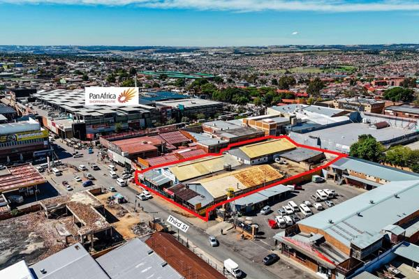
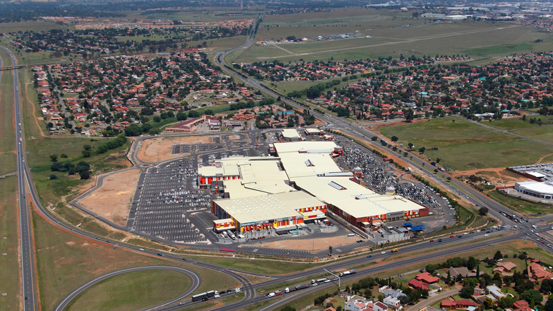
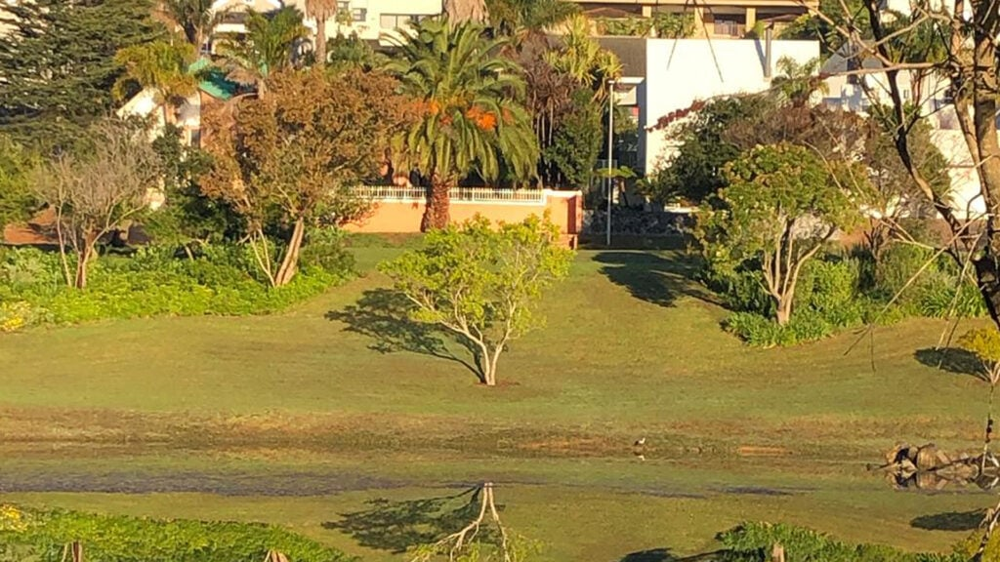
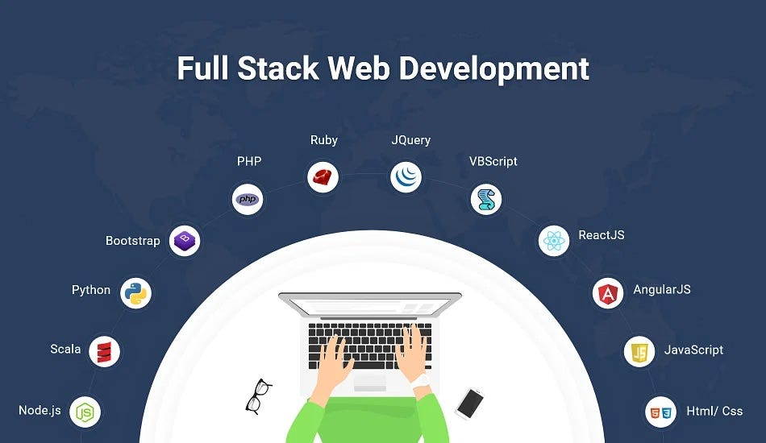
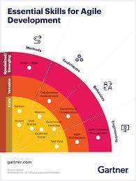

Historical Places

Wynberg
One fact about this place is that it is the first place I lived in my own apartment, after getting a job in 2022 it became pivotal to find a place close to work and so where I found an apartment was simply 3 minutes away from my previous place of employment.

Brakpan
Brakpan is simply home away from home, it is a Place place where I was birthed from and it is a place that I continually visit for rejuvination and for strengthening. I also go there for entertainment at Carnival City.

Welgedacht (Springs)
During my undergraduate days I fell in love with a damsel and she was from the land of Mpumalanga in Bushbuckridge. So during our love, one day I was inspired to visit her at her home province and that was a whole beautiful experience, no lie the land is preetty hot and a bit dry but things are affordable and one can get a lot done through the day.Favorite Subjects

4IR Technologies Bootcamp
4IR Technologies Bootcamp is my favourite subject due to its practical relevance, skill-building opportunities, career prospects, networking benefits, and personal interest in emerging technologies.

Full Stack Web Development For 4IR
Full Stack Web Development for 4IR is my favourite subject because it offers a pathway to acquiring valuable skills, aligns with industry demands, provides ample job opportunities, offers practical experience, enables entrepreneurial pursuits, and fosters a culture of continuous learning and growth.
